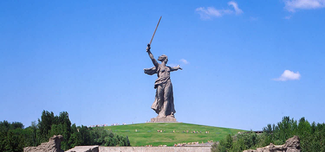

Batalha de
Stalingrado
1942 - 1943

Local
Stalingrado, hoje Volgogrado, às margens do rio Volga, Rússia.
Durante a Segunda Guerra Mundial, forças alemãs e seus aliados tentaram conquistar a cidade, mas foram cercadas pelo Exército Vermelho soviético. A rendição alemã tornou-se um grande ponto de virada na frente oriental do conflito.